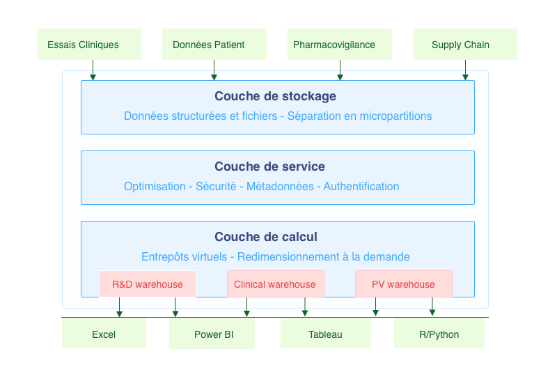

Snowflake et la gestion des données dans l'industrie pharmaceutique
Avec l'accumulation de données hétéroclites, l'industrie pharmaceutique se trouve face au défi de stocker, analyser et exploiter efficacement des montagnes d'informations. Nos fichiers Excel risquent d'être un peu légers pour gérer de telles quantités de données, même avec Power Query. C'est ici que des outils comme Snowflake entrent en jeu, offrant une solution cloud moderne permettant de gérer la distribution des données et de casser les silos existants.
Snowflake est une plateforme cloud de stockage et d'analyse de données massives. Son architecture sépare stockage et calcul, offrant flexibilité et évolutivité. Elle répond aux exigences de l'industrie et facilite la collaboration entre les équipes, avec un accès fiable et rapide aux données partagées.
Les atouts de Snowflake pour l'écosystème pharmaceutique
1. Architecture séparant stockage et calcul
L'architecture unique de Snowflake offre plusieurs avantages. Le premier, c'est un dimensionnement dynamique. Imaginons que vous ayez besoin d'analyser rapidement des millions de points de données d'essais cliniques : Snowflake vous permet d'augmenter temporairement la puissance de calcul pour cette analyse, puis de la réduire une fois l'analyse terminée.
Cette évolutivité permet de contrôler les coûts, le modèle reposant sur un paiement à l'usage. Les entrepôts virtuels peuvent être dimensionnés et optimisés en fonction des besoins spécifiques de chaque département, permettant par exemple à l'équipe de pharmacovigilance de disposer de ressources adaptées à ses analyses intensives sans affecter les performances des autres utilisateurs.
2. Sécurité et conformité renforcées
Dans un secteur aussi réglementé, la sécurité des données est une nécessité. Snowflake répond à cette exigence en chiffrant toutes les données, aussi bien au repos qu'en transit. Le contrôle d'accès granulaire permet de définir précisément qui peut accéder à quelles données, jusqu'au niveau des lignes et des colonnes. Vous pouvez ainsi accorder aux équipes cliniques l'accès à certaines données de patients tout en masquant les informations personnelles identifiables aux équipes marketing.
Chaque accès ou modification est également enregistré, créant une piste d'audit complète qui facilite grandement les démarches de conformité GxP. Snowflake bénéficie aussi de certifications clés comme HIPAA, SOC 1 Type II, SOC 2 Type II, et autres réglementations essentielles.
3. Partage de données sécurisé
Le secteur pharmaceutique fonctionne en écosystème, avec des collaborations entre laboratoires, CROs, autorités de santé et autres partenaires. Snowflake fluidifie ces interactions grâce à son approche unique du partage de données. Vous pouvez désormais partager des vues spécifiques de vos données avec des partenaires sans jamais avoir à déplacer physiquement ces données.
Cette fonctionnalité de Data Sharing sans copie répond parfaitement aux exigences de sécurité tout en facilitant la collaboration. Si vous travaillez avec une CRO sur un essai clinique, vous pouvez lui donner accès uniquement aux données dont elle a besoin, sans risque de fuite d'informations confidentielles.
Snowflake propose également une Marketplace de données permettant d'accéder à des sources externes pertinentes (données épidémiologiques, démographiques, etc.) directement depuis votre environnement, enrichissant ainsi vos analyses.

4. Intégration avec l'écosystème data existant
Snowflake ne remplace pas tous vos outils actuels, il les complète. La transition peut être progressive et respectueuse des habitudes de travail établies. Les analystes habitués à Excel peuvent continuer à l'utiliser comme interface, tout en profitant de la puissance de calcul et du stockage de Snowflake grâce à une connexion bidirectionnelle.
La complémentarité s'étend également aux outils d'analyse populaires comme Tableau, Power BI, R ou Python. Vos data scientists peuvent continuer à travailler avec leurs environnements préférés tout en tirant parti des capacités de Snowflake. De même, la plateforme s'intègre parfaitement avec la plupart des outils d'intégration de données (Informatica, Talend, Alteryx, etc.), facilitant la mise en place de pipelines de données robustes et évolutifs.
Cas d'usage dans l'industrie pharmaceutique
1. Accélération des essais cliniques
Les essais cliniques représentent l'un des processus les plus complexes et coûteux. Ils génèrent aussi d'immenses volumes de données qui doivent être analysées rapidement et précisément. Snowflake permet une intégration fluide des données provenant de dizaines ou centaines de sites d'essais cliniques différents.
Imaginez que vous supervisez un essai clinique international impliquant 200 sites dans 30 pays. Chaque jour, des données de patients sont collectées selon des formats parfois différents, dans diverses langues, avec des unités de mesure variables. La consolidation de ces données peut se faire presque en temps réel, permettant une validation rapide des données, une détection précoce des signaux d'efficacité ou de sécurité grâce à des analyses continues.
Les fonctionnalités de transformation native permettent également d'automatiser grandement le nettoyage et la standardisation des données, réduisant considérablement le temps consacré à cette tâche essentielle.
2. Pharmacovigilance et sécurité des médicaments
La surveillance post-commercialisation est une obligation réglementaire qui exige une analyse rapide des signaux de sécurité de diverses sources. Qu'il s'agisse de rapports spontanés, de littérature médicale, de médias sociaux ou de données de réclamations, toutes ces informations peuvent être intégrées dans un référentiel unique.
Cette consolidation permet une détection de signaux avancée utilisant des requêtes complexes et des analyses statistiques pour identifier les événements indésirables potentiels. Là où les systèmes traditionnels peinaient à traiter des requêtes multidimensionnelles sur des millions d'enregistrements, Snowflake offre des performances remarquables qui transforment la réactivité des équipes.
La plateforme assure également une traçabilité complète avec la conservation de l'historique complet des analyses. Lors d'une inspection ou d'une demande spécifique de la FDA ou de l'EMA, vous pouvez rapidement retrouver l'état exact des données et des analyses à n'importe quel moment dans le passé.
3. Optimisation de la chaîne d'approvisionnement
La gestion de la supply chain pharmaceutique pose des défis uniques liés à la complexité des produits et aux contraintes réglementaires. Snowflake permet une analyse intégrée des données pour optimiser chaque maillon de cette chaîne.
La prévision de la demande gagne en précision grâce à l'analyse des tendances historiques et de facteurs externes comme les données épidémiologiques ou saisonnières. Cela améliore la gestion des stocks et réduit les ruptures d'approvisionnement, cruciales pour les médicaments essentiels.
4. Insights commerciaux et Market Access
Dans un environnement pharmaceutique de plus en plus concurrentiel, l'optimisation des stratégies commerciales s'appuie sur une analyse fine des données de marché. Snowflake transforme cette dimension en permettant des analyses multidimensionnelles qui dépassent largement les capacités des outils traditionnels.
La segmentation client devient plus sophistiquée, intégrant non seulement les historiques de prescription mais aussi des données comportementales, des caractéristiques démographiques et des indicateurs de réceptivité aux différentes approches marketing. Cette vision à 360° des prescripteurs et institutions permet une personnalisation des interactions.
La mesure du ROI marketing gagne également en précision grâce à la consolidation des données de CRM, des ventes et des activités promotionnelles. Cette vision unifiée permet d'identifier les actions les plus efficaces et d'optimiser l'allocation des ressources marketing, un enjeu crucial dans un contexte de pression constante sur les budgets.
Enfin, les équipes de pricing et d'accès au marché bénéficient d'une capacité inédite d'analyse des données de remboursement et de modélisation d'impact pour optimiser les stratégies de lancement et de négociation. Dans un environnement où les payeurs exigent de plus en plus de preuves de valeur, cette capacité analytique avancée devient un avantage concurrentiel majeur.
Mise en œuvre : par où commencer ?
L'adoption de Snowflake dans une organisation pharmaceutique demande une approche structurée, progressive et alignée avec les objectifs stratégiques. Voici comment aborder cette transformation :
1. Évaluation des besoins et définition de la stratégie
La première étape consiste à réaliser un audit approfondi de vos données existantes : quelles sont les sources, les volumes, les usages actuels et surtout, quelles sont les limitations qui freinent votre capacité d'analyse et de décision ? Cette cartographie doit s'accompagner d'une réflexion sur les cas d'usage prioritaires. Il ne s'agit pas de tout migrer d'un coup, mais de commencer par les domaines où l'impact sera le plus significatif.
Peut-être que votre département clinique perd un temps considérable à consolider les données d'essais, ou que votre équipe de pharmacovigilance est limitée dans sa capacité à détecter rapidement les signaux d'alerte. Ces difficultés concrètes constituent d'excellents candidats pour un premier déploiement. Sur cette base, vous pourrez élaborer une roadmap par phases, limitant ainsi les risques tout en démontrant rapidement la valeur ajoutée de la plateforme.
2. Architecture et conception
L'étape suivante consiste à définir précisément comment Snowflake s'intégrera à votre écosystème IT existant. Quels systèmes continueront à fonctionner en parallèle ? Lesquels seront progressivement remplacés ? Comment s'articuleront les flux de données entre ces différentes composantes ? Cette réflexion architecturale est essentielle pour garantir une transition fluide et éviter la création de nouveaux silos.
La conception du modèle de données représente également un enjeu majeur. Snowflake offre une grande flexibilité dans l'organisation des données en bases, schémas et tables, mais cette liberté doit être encadrée par une réflexion sur les usages futurs. Un modèle bien conçu facilitera grandement les analyses transversales et l'évolution future de vos besoins.
Enfin, l'établissement des politiques de gouvernance doit être abordé dès cette phase : quelles sont les règles de sécurité, de rétention et de confidentialité qui s'appliqueront ? Qui aura accès à quelles données et dans quelles conditions ? Ces questions, cruciales dans l'environnement réglementé de l'industrie pharmaceutique, doivent être traitées en amont pour éviter des reconfigurations coûteuses par la suite.
3. Migration et intégration
La phase de migration proprement dite doit suivre une approche progressive. Il est recommandé de commencer par des ensembles de données non critiques, permettant ainsi à vos équipes de se familiariser avec la plateforme sans risque opérationnel majeur. Cette approche par petits pas permet aussi d'affiner les processus de migration avant d'aborder des données plus sensibles.
La mise en place des flux ETL/ELT (Extract, Transform, Load / Extract, Load, Transform) constitue une étape clé pour assurer l'alimentation continue de votre environnement données. Ces pipelines doivent être conçus avec soin pour garantir la fraîcheur et la fiabilité des données, tout en minimisant l'impact sur les systèmes sources.
Parallèlement, la connexion aux outils d'analyse existants doit être configurée pour permettre aux utilisateurs de continuer à travailler avec leurs interfaces familières. Qu'il s'agisse de Tableau, Power BI ou même Excel, cette intégration permet de réduire la courbe d'apprentissage et d'accélérer l'adoption.
4. Formation et adoption
Le succès d'un déploiement d'outils comme Snowflake repose en grande partie sur l'appropriation de la plateforme par les utilisateurs. La formation des équipes techniques (administrateurs, développeurs, responsables de la sécurité) doit être complète et approfondie pour garantir une gestion optimale de l'environnement.
La formation des utilisateurs métier, quant à elle, doit se concentrer sur les cas d'usage concrets qui correspondent à leurs besoins quotidiens. Comment accéder aux données pertinentes ? Comment créer des analyses et des visualisations efficaces ? Comment partager les résultats avec les collègues ? Ces aspects pratiques sont essentiels pour favoriser l'adoption.
La création d'une communauté interne d'utilisateurs peut également accélérer la diffusion des bonnes pratiques et des cas d'usage innovants. Des sessions régulières de partage d'expérience, un forum interne ou une bibliothèque de requêtes et rapports types constituent des ressources précieuses pour accompagner la montée en compétence collective.
Défis et considérations clés
Malgré ces avantages, l'adoption de Snowflake présente certains défis qu'il convient d'anticiper. La gestion des coûts représente un enjeu important. Sans mécanismes de contrôle appropriés, des requêtes mal optimisées ou des entrepôts de données surdimensionnés peuvent entraîner des surcoûts en lieu et place des économies escomptées. Il est donc essentiel de mettre en place un monitoring rigoureux et d'éduquer les utilisateurs aux bonnes pratiques d'optimisation.
L'évolution vers Snowflake requiert également de nouvelles compétences. Si le SQL reste le langage principal d'interaction, l'architecture cloud et les spécificités de la plateforme nécessitent une formation adaptée des équipes techniques. Cette montée en compétence doit être planifiée et budgétée dans le cadre du projet global.
La gouvernance des données constitue un autre défi majeur, particulièrement dans le secteur pharmaceutique. Il ne s'agit pas seulement de sécuriser les accès, mais aussi de définir des politiques de qualité, de classification et de cycle de vie des données. Cette dimension organisationnelle est souvent plus complexe à gérer que les aspects purement techniques.
Enfin, la migration des processus existants vers une nouvelle plateforme implique une adaptation des workflows analytiques et de reporting. Des processus parfois établis depuis des années doivent être repensés pour tirer pleinement parti des capacités de la plateforme, ce qui peut susciter des résistances au changement qu'il convient d'accompagner avec pédagogie.
Au final
Snowflake fournit des possibilités intéressantes pour l'exploitation des données à grande échelle dans l'industrie pharmaceutique. La séparation du stockage et du calcul, la sécurité de niveau entreprise et la facilitation de la collaboration répondent précisément aux défis spécifiques du secteur.
La transition vers une plateforme comme Snowflake n'est pas qu'une question technologique, c'est une transformation de la façon dont l'organisation perçoit, valorise et exploite ses données. Pour les entreprises pharmaceutiques qui souhaitent rester compétitives dans un environnement de plus en plus data-driven, cet outil représente un véritable accélérateur d'innovation. Il permet de transformer la montagne de données disponibles en insights actionnables, accélérant ainsi la découverte scientifique, optimisant les opérations.
← Tous les articles